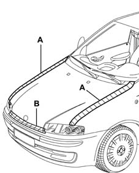

7025A Location of bonnet wind noise
- Path
- Test > 70 FITTINGS > 7025 COMPARTMENT LIDS > 7025A Location of bonnet wind noise
- Kind
- test / check procedure
- Applies to
- all engines; all production periods
- Interactive page
- https://sloeber94.github.io/elrnDB-lYpsln/en/#/2429824
Applies to: all engines; all production periods
Tape the various areas shown in the figure with masking tape.

Applies to: all engines; all production periods
Conduct a road test, gradually bringing the car up to the speed where the noise starts: if the rustling noise persists, check that the plugs are present and that the cable passes on the flame-proof bulkhead are fitted correctly.
Remove the masking tape from area A and repeat the road test: if the noise persists, check the buffers at the rear where the bonnet meets the wings.
Remove the masking tape from area B and repeat the road test: if the noise persists, check the condition of the front sound-proofing seal and that it is correctly fitted (it must adhere perfectly to the cross panel when the bonnet is closed (7025A62 bonnet lid anti-wind noise seal - r+r).